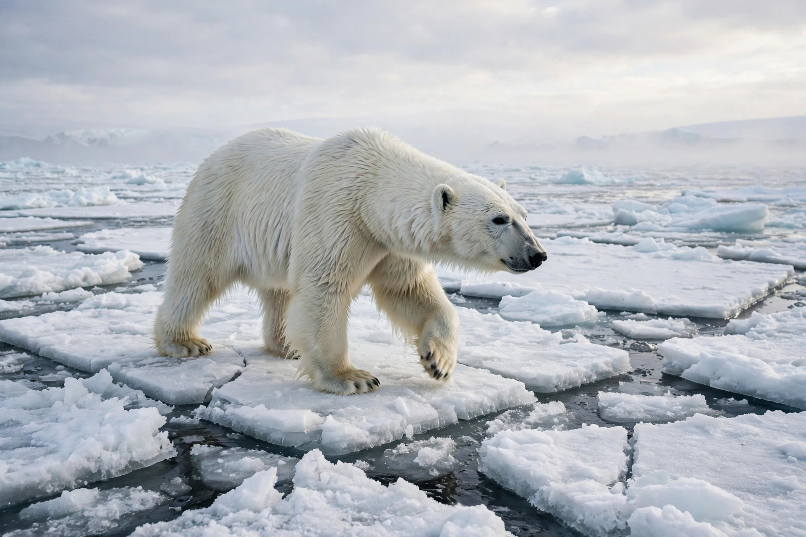

[Image placeholder: A polar bear on Arctic sea ice]The **Arctic** is the region around Earth's North Pole, opposite the Antarctic. It is usually defined as the area north of the Arctic Circle (66°33′ N), or by the 10 °C July isotherm, and comprises the Arctic Ocean — largely covered by sea ice — and the northern lands of Canada, Russia, Greenland, Alaska (US), Norway (Svalbard), Sweden, Finland and Iceland.
The Arctic is warming about four times faster than the global average ('Arctic amplification'), shrinking summer sea ice toward possible ice-free summers within decades, thawing permafrost, and opening shipping routes (the Northern Sea Route and Northwest Passage) and resource frontiers that raise geopolitical stakes among the eight Arctic states of the Arctic Council. Indigenous peoples — Inuit, Sámi, Yupik, Chukchi and dozens of Russian northern peoples — have lived here for millennia. Polar bears, narwhals, walrus and the polar night and midnight sun define its image.
Sea ice reflects sunlight (albedo) and its loss accelerates warming; thawing permafrost releases methane and damages buildings and pipelines. Arctic ecosystems support vast migratory bird and marine mammal populations, and contaminants concentrate here through global distillation.